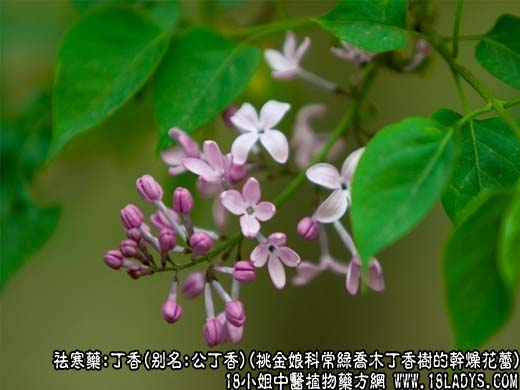
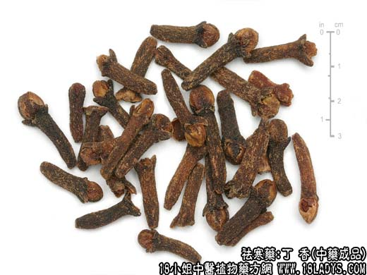

原文连接:https://www.daquan.com/post/2109.html



丁香为常用中药。始载宋《开宝本草》。
别名：公丁香
来源：为桃金娘科植物常绿乔木丁香树的干燥花蕾。
产地：坦桑尼亚，印尼，马来西亚等地。
性状鉴别：形如乳钵锤，长1.5~2厘米，上端近圆球形，大如豌豆，系四片花瓣抱拢而成，上有四个三角形花萼。棕黄色或棕色。下部花柄方圆形为全长的3/4，有细皱纹，紫棕色。质脆易折断，断面显油性。有令人愉快的强烈芳香气。味麻辣。以花大油足，色紫红者为佳。
主要成分：含丁香油，其中主要为丁香油酚。又含鞣质、齐墩果酸等。
药理作用：1、健胃驱风，丁香油能促进胃液分泌；2、抗菌。对痢疾杆菌、金黄色葡萄球菌、结核杆菌等有较强的抗菌作用；3、抗病毒。对流感病毒有明显抑制作用；4、抗真菌。对多种皮肤癣菌有较强的抑制作用。
炮制：生用。
性味：辛、温。
归经：入脾、胃、肺、肾经。
功能：温中壮阳，下气降逆。
主治：虚寒呃逆，心腹冷痛，呕哕吐泻，阳萎阴冷。
临床应用：1、为治疗胃寒呃逆的重要药物。凡属呃声低微，并有形寒气弱、胸闷脉迟者。可用丁香配柿蒂、生姜等开郁散痰，有助于止呃逆，方如丁香柿蒂汤，寒重者可再加肉桂。
2、治疗消化不良、急性胃肠炎而有腹痛、冷厥、反胃、吐泻等，可用丁香配砂仁、白术、党参、陈皮、生姜等水煎服，效果较好。
3、外用丁香煎液涂擦患部，治头癣、体癣、股癣、手癣等，有一定疗效，可能减轻痒感，减少落屑。
用量：内服1.5~4.5g；外用治癣可用丁香9g加水一碗，煎沸20~30分钟后用。
处方举例：丁香柿蒂汤（《证因脉治》）：丁香3g，柿蒂3g，党参12g，生姜6g，水煎服。
注：临床实验用丁香液治疗头癣，体癣、手癣疗效显著。
附：母丁香
别名：鸡舌香
来源：为丁香近于成熟的果实。
性状鉴别：长圆形。长2~2.5厘米，直径5~8毫米，黑棕色，有细皱纹，顶端有四个分裂的花萼向内弯曲。果皮与种皮薄壳状，内含种仁倒卵形，由两片子叶抱合而或。子叶形如鸡舌，质重坚硬。商品在产地已纵向切开，种仁和果皮大部分已分开，很少有完整者。气味同公丁香，但较差。
以瓣整齐黑棕色气香味辛辣者为佳。
炮制：生用。
效用：同公丁香。